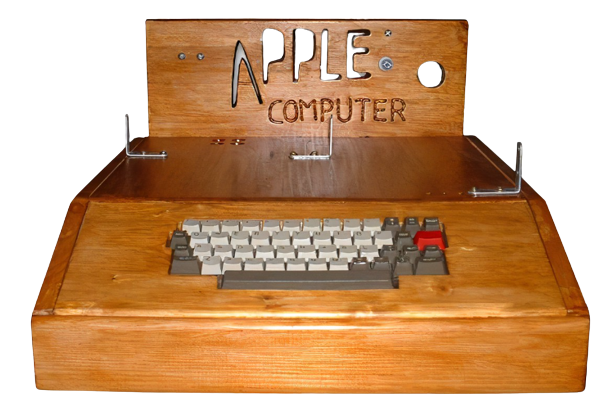
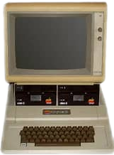
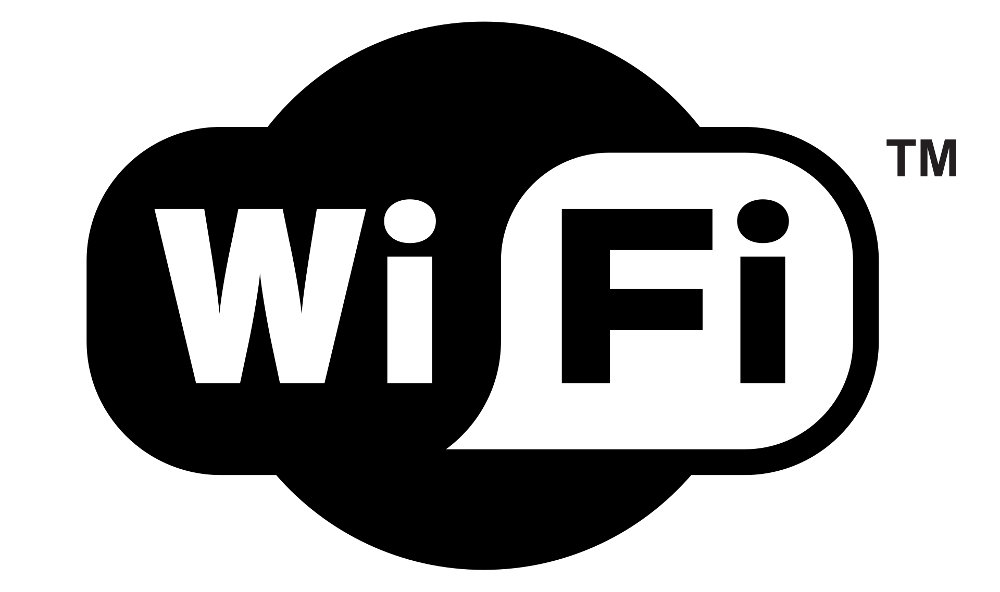
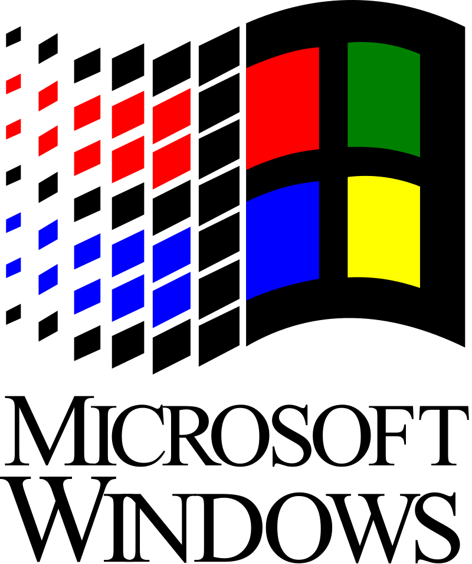
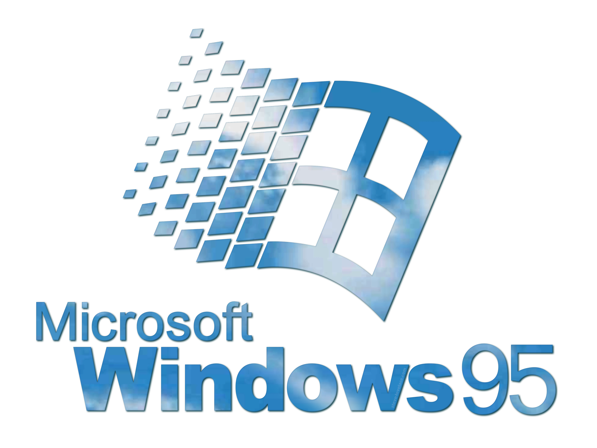
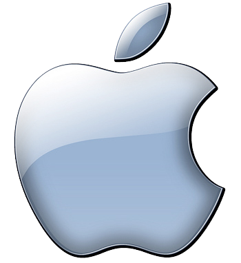

Hewlett-Packard(HP)
Year:1939
The company was founded in a one-car garage in Palo Alto by Bill Hewlett and
David Packard in 1939, and initially produced a line of electronic test and measurement
equipment. The HP Garage at 367 Addison Avenue is now designated an official California
Historical Landmark, and is marked with a plaque calling it the "Birthplace of 'Silicon
Valley'. HP specialized in developing and manufacturing computing, data storage, and
networking hardware; designing software; and delivering services.
Altair 8800
Year:1975
The Altair 8800 is a microcomputer designed in 1974 by MITS and based on the
Intel 8080 CPU. Interest grew quickly after it was featured on the cover of the January
1975 issue of Popular Electronics. According to Harry
Garland, the Altair 8800 was the product that catalyzed the microcomputer revolution of the
1970s.

Apple I
Year:1975
On March 5 1975, Steve Wozniak attended the first meeting of the Homebrew
Computer Club in Gordon French's garage. Steve immediately went to work and after building a
computer and
showing it at the club, he and Steve Jobs gave out technical designs for the
computer to interested club members and helped some of them build and test out
copies. Then, Steve Jobs suggested that they design and sell a single
circuit board, just the bare board, with no electronic parts that
people could use to build the computers.

Apple 2
Year:1977
The Apple 2 was designed by Steve Wozniak, Jerry Manock developed the design
of Apple 2's case and Rod Holt developed the switching power supply. Steve Jobs's role in
the
design of the computer was limited to overseeing Jerry Manock's work on the plastic case. It
was introduced by Steve Jobs and Steve Wozniak at
the 1977 West Coast Computer Faire, and marks Apple's first launch of a personal computer.
The Apple II computers were assembled in Silicon Valley

Launching of Macintosh
Year:1984
The first ever Apple Macintosch, Macintosch 128K, was made in 1984 by Apple
inc.

Wi-Fi
Year:1991
In 1991 in the Netherlands, the NCR Corporation and AT&T invented the
precursor to 802.11, intended for use in cashier systems. NCR's
Vic Hayes approached the Institute of Electrical and Electronics Engineers (IEEE) to
create a standard and were involved in designing the initial 802.11b and 802.11a
specifications within the IEEE. They have both been subsequently inducted into the Wi-Fi.

Windows 3.1
Year:1992
Windows 3.1 is a major release of Microsoft Windows. It was released to
manufacturing on April 6, 1992, as a successor to Windows 3.0.
Like its predecessors, the Windows 3.1 series ran as a shell on top of MS-DOS.Its multimedia
was expanded,
and screensavers were introduced, alongside new
software such as Windows Media Player and Sound Recorder.

Windows 95
Year:1995
Windows 95 is a consumer-oriented operating system
developed by Microsoft. The first
operating system in the 9x family, it is the successor to Windows 3.1x, and was released to
manufacturing on July 14, 1995. Windows 95 is the first version of Microsoft
Windows to include the start button. Windows 95 merged Microsoft's formerly separate
MS-DOS and Microsoft Windows products.
Google
Year:1998
Google began in January 1996 as a research project by Larry Page and Sergey
Brin when they were both PhD students at Stanford University in California. The
project initially involved an unofficial "third founder", Scott Hassan, the original lead
programmer who wrote much of the code for the original Google Search engine, but he left
before Google was officially founded as a company.
Facebook
Year:2004
Facebook is an online social media and social networking service owned by
American technology giant Meta Platforms. Created in 2004 by Mark Zuckerberg with fellow
Harvard College students and roommates. Membership was initially limited to Harvard
students, gradually
expanding to other North American universities and, since 2006, anyone who is 13 years old
(or older).
YouTube
Year:2005
YouTube is an online video sharing and social media platform. Accessible
worldwide, it was launched on February
14, 2005, by Steve Chen, Chad Hurley, and Jawed Karim. It is owned by Google and is the
second most visited website in the world, after Google Search.

Twitter
Year:2006
Twitter, rebranding to X since July 2023, is an online social media and
social networking service operated by the American company X Corp., the successor of
Twitter, Inc. On Twitter, registered users can post texts, images and videos. Users interact
with Twitter through browser or mobile frontend software,
via its application programming interfaces.
Twitter was created in March 2006 by Jack Dorsey, Noah Glass, Biz Stone, and Evan Williams.
It was launched in July of that year.

iPhone
Year:2007
The iPhone is the first iPhone model and the first smartphone designed and
marketed by Apple Inc. After years of rumors and speculation, it was officially announced on
January 9, 2007, and was released in the United States on June 29, 2007. In 1999, Apple CEO
Steve Jobs envisioned an Apple touchscreen product that the user could interact with
directly with their fingers rather than using a stylus.